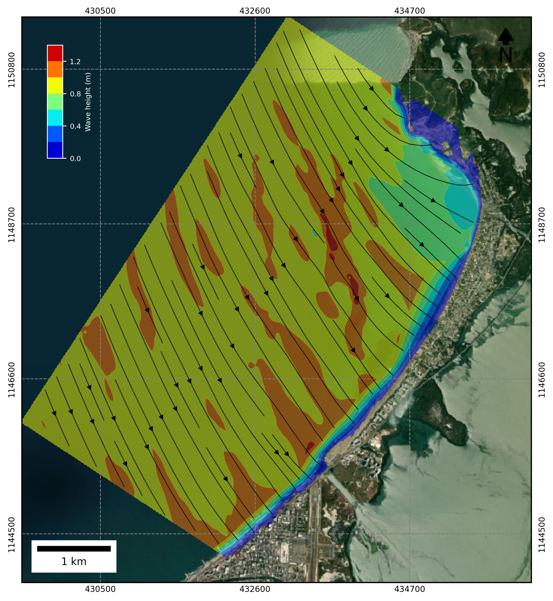
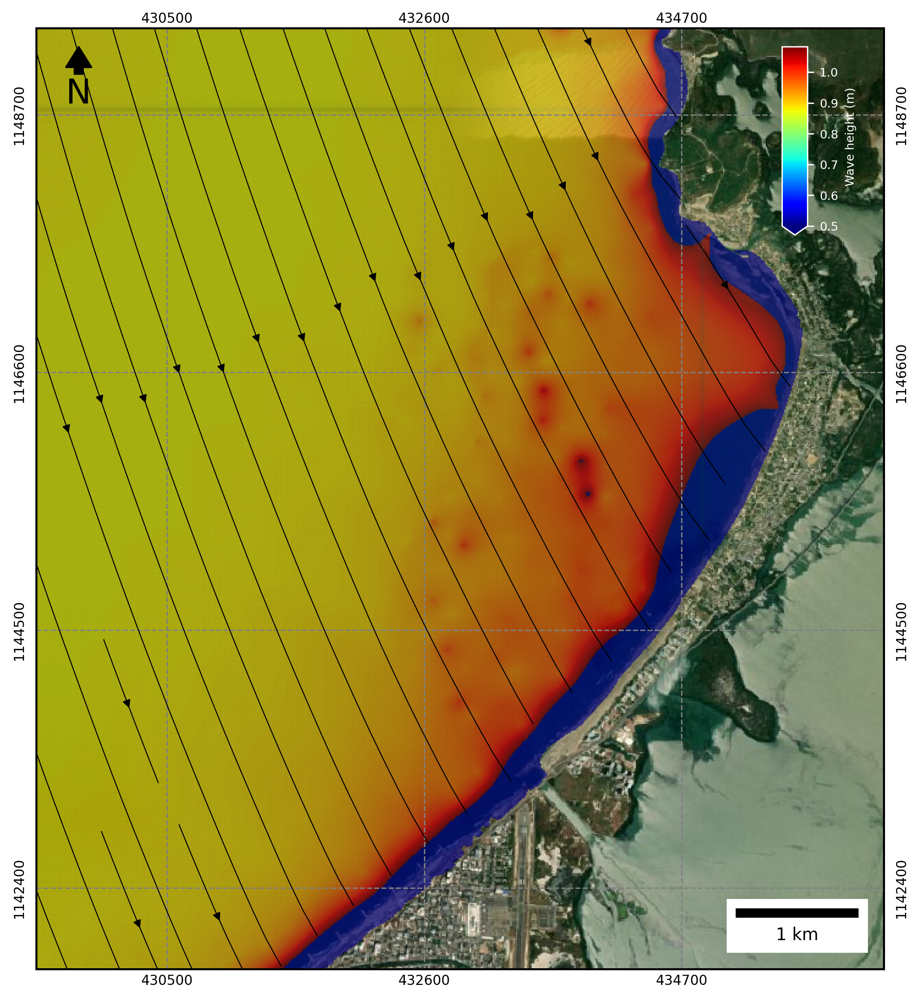
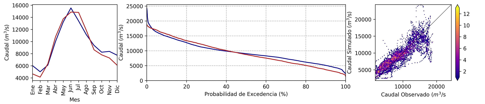
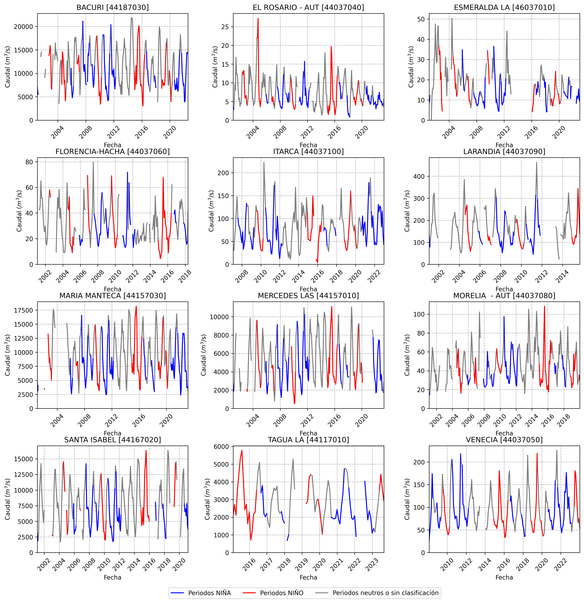
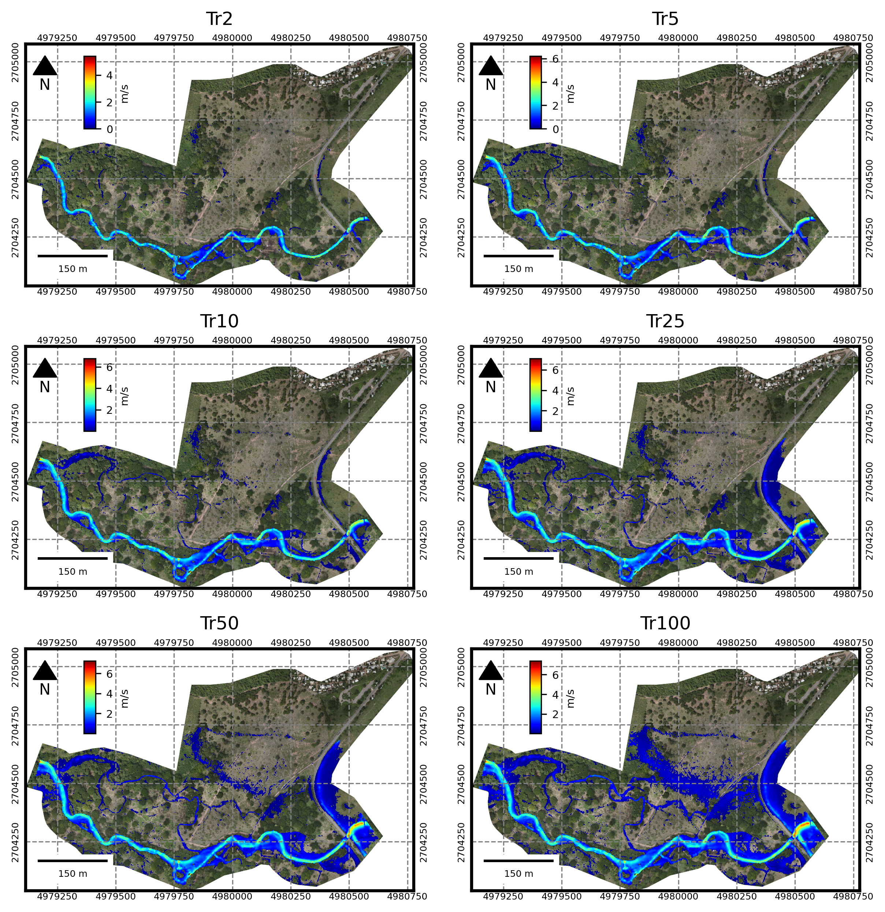
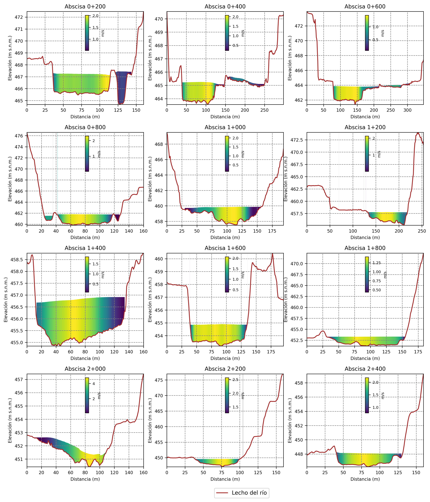
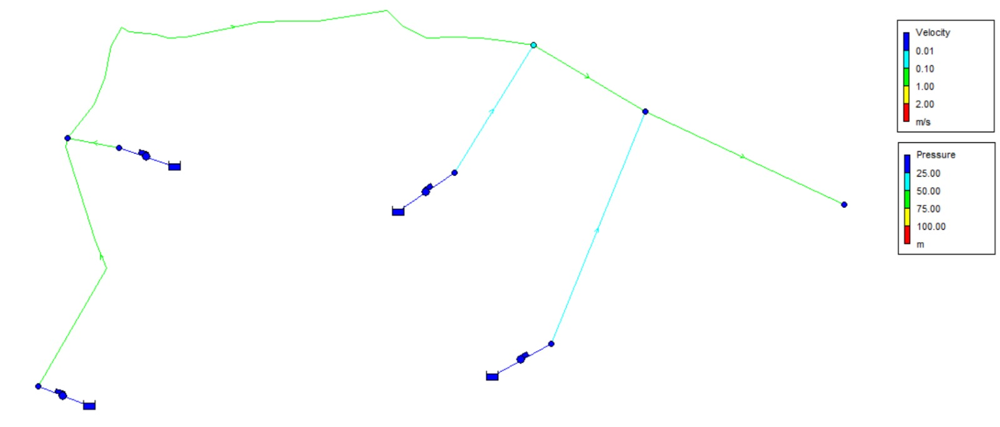
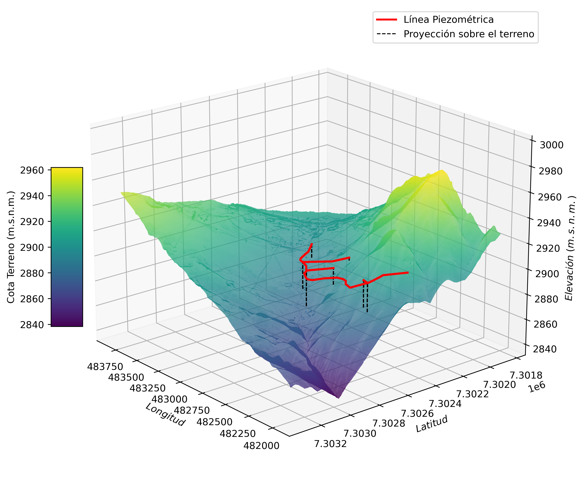
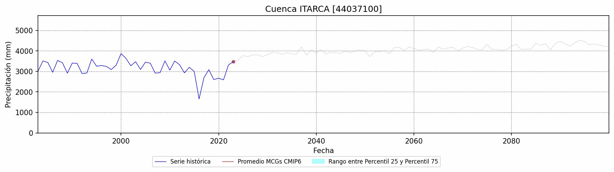
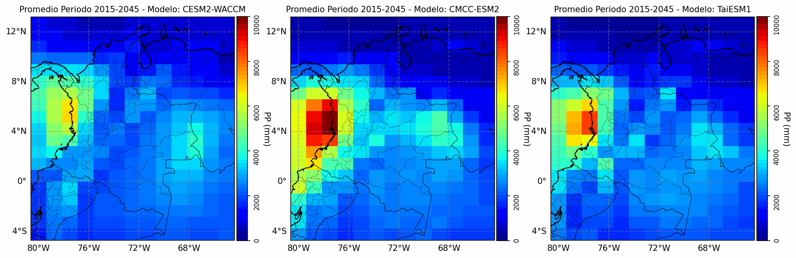

CONSULTOR EN RECURSOS HÍDRICOS
Soy un profesional con enfasis en la consultoría y desarrollo de proyectos hidrológicos e hidráulicos, con una trayectoria consolidada a través de más de 20 proyectos a escala global. Mi perfil se centra en la innovación y el desarrollo tecnológico, aplicando soluciones efectivas y sostenibles para sectores clave como el minero-energético, el saneamiento básico y la infraestructura vial. He liderado y colaborado en proyectos de gran envergadura, tales como el Proyecto Hidroeléctrico Ituango, el Proyecto Minero de Cobre Quebradona y Gramalote en Colombia, la Sociedad Minera El Abra y Minera Escondida en Chile, minera Peñasquito en México, minera Agua Rica en Argentina, minera Volcan en Perú y el Proyecto de Análisis de Riesgo de Inundación del río Gallo en España. Estos proyectos me han permitido adquirir un profundo conocimiento en la gestión de recursos hídricos, la modelación y el diseño, aportando soluciones innovadoras y sostenibles a las necesidades de cada cliente o entidad con la que tengo la oportunidad de colaborar.
En mi portafolio, presento una visión integral de mis competencias técnicas y áreas de especialización, las cuales abarcan desde la hidroclimatología hasta la ingeniería de sistemas hídricos. A través de esta plataforma, expongo mi experiencia y conocimientos tecnicos en modelación numérica, análisis de datos y diseño de infraestructuras, destacando cómo estos conocimientos pueden aplicarse eficazmente en diferentes sectores de la ingeniería. Cada sección de la página web profundiza en aspectos claves de mi trayectoria y está orientado a ofrecer soluciones técnicas innovadoras y sostenibles que respondan a las necesidades específicas de cada cliente.
Software y Herramientas/Lenguajes de Programación que integro en el desarrollo de proyectos:
Áreas Técnicas en las que aporto experiencia significativa:
Publicaciones Científicas
Streamflow Simulation Based on a Hybrid Morphometric–Satellite Methodological Framework
Autores: Pérez-Campo, et al. (2026).
Revista: Water (MDPI), Volumen 18, Número 7.
Hidroclimatología
Capacidades Técnicas y Modelación Avanzada
- Análisis de datos asociados a fenómenos macroclimáticos como el ENSO (El Niño–Southern Oscillation) para el estudio predictivo de sequías o inundaciones severas.
- Evaluación y modelación de fenómenos atmospheric extremos como huracanes, zonas de baja presión y vendavales.
- Análisis de variaciones espacio-temporales de múltiples variables hidroclimatológicas (precipitación, evapotranspiración, temperatura, humedad, radiación, velocidad del viento).
- Estudio y simulación de flujos geofísicos asociados a la climatología (vientos geostróficos, quasi-geostróficos, entre otros).
- Construcción de líneas base climáticas de alta precisión para estudios de impacto ambiental y licenciamiento.
- Análisis geoespacial y procesamiento masivo de datos mediante Google Earth Engine.


Análisis de velocidad del viento y precipitación total durante el paso de la tormenta tropical Julia en octubre de 2023 sobre el mar Caribe para proyecto de análisis de vulnerabilidad por riesgo de inundación pluvial (Elaboración: Propia)
Soluciones y Valor de Consultoría para Sectores Estratégicos
- Gestión de recursos hídricos: Modelación para planificar respuestas a sequías e inundaciones, optimizando el manejo de reservas de agua y sistemas de riego complejos.
- Agricultura de precisión: Herramientas para anticipar y mitigar el impacto de fenómenos climáticos extremos en los cultivos, mejorando la resiliencia operativa.
- Infraestructura y construcción civil: Parámetros de diseño óptimos para proyectos resilientes a huracanes y vendavales, asegurando su durabilidad estructural y seguridad.
- Planificación urbana sostenible: Integración de datos climáticos históricos y predictivos en el diseño de ciudades y el ordenamiento territorial.
- Gestión del riesgo de desastres: Evaluación probabilística para la formulación de estrategias corporativas y gubernamentales de prevención y mitigación.
- Estudios ambientales y auditorías: Definición de líneas base climáticas robustas para evaluar el impacto ambiental de megaproyectos y políticas públicas.
Hidráulica Marítima e Ingeniería de Costas
Capacidades Técnicas y Modelación Avanzada
- Desarrollo y calibración de modelos de oleaje unidimensionales y bidimensionales complejos.
- Cuantificación de procesos costeros dinámicos como el transporte longitudinal y transversal de sedimentos, tasas de erosión costera y sedimentación inducida.
- Análisis avanzado de perfiles de playa, con ajuste y validación de tipologías bajo metodologías de referencia global (Dean, Bodge, entre otros).
- Estimación predictiva del ascenso del nivel del mar mediante el análisis estadístico de mareógrafos y limnígrafos.
- Diseño estructural y funcional de obras complejas de protección costera.
- Evaluación probabilística y análisis numérico de riesgo por inundación marítima.


Modelación hidráulica unidimensional y bidimensional de un sector costero de Cartagena, Colombia, para la elaboración de estudios de vulnerabilidad por riesgo de inundación marítima (Elaboración: Propia)
Soluciones y Valor de Consultoría para Sectores Estratégicos
- Protección costera resiliente: Diseño óptimo y construcción de estructuras de defensa marginal (diques, rompeolas, espolones) para mitigar la erosión y absorber el ascenso del nivel del mar.
- Gestión dinámica de sedimentos: Modelación del transporte litoral esencial para la planificación económica y ambiental de proyectos de dragado y restauración de playas.
- Planificación urbana y portuaria costera: Integración de dinámicas de oleaje en el desarrollo de infraestructuras críticas, terminales marítimas y zonas residenciales.
- Ingeniería marítima y portuaria: Optimización de infraestructuras en el mar, garantizando la seguridad operativa frente a solicitaciones hidrodinámicas extremas.
- Gestión del riesgo y resiliencia: Evaluaciones técnicas para mitigar el riesgo de inundaciones marítimas en zonas de alta plusvalía o asentamientos vulnerables.
Hidrología Superficial
Mi enfoque combina la implementación avanzada de modelos numéricos y analítica de datos hidrometeorológicos para optimizar el aprovechamiento del recurso hídrico, garantizando la viabilidad y seguridad técnica en proyectos de energía, infraestructura crítica y desarrollo territorial.
Capacidades Técnicas y Modelación Avanzada
- Modelación hidrológica agregada a múltiples escalas temporales, implementando algoritmos de referencia como GR4J, GR2M, HEC-HMS, TETIS y Modelos de Tanques.
- Modelación hidrológica distribuida y bidimensional acoplada mediante entornos líderes como IBER y HEC-RAS.
- Estimación de caudales máximos y mínimos de diseño mediante tránsito de avenidas (modelación lluvia-escorrentía) y análisis robusto de series temporales.
- Generación de curvas de Intensidad-Duración-Frecuencia (IDF) y modelación de precipitaciones máximas probables para el dimensionamiento de obras civiles.
- Evaluación de balances hídricos globales y determinación de la disponibilidad hídrica superficial para otorgamiento de concesiones y licencias.


Modelación hidrológica agregada en la cuenca del río Caquetá, en uno de sus tramos, para un proyecto de estimación de disponibilidad hídrica (Elaboración: Propia)

Análisis de efecto del fenómeno ENSO sobre las series hidrológicas en la cuenca del río Caquetá (Proyecto disponibilidad hídrica del río Caquetá) (Elaboración: Propia)
Soluciones y Valor de Consultoría para Sectores Estratégicos
- Gobernanza y gestión de recursos hídricos: Planificación estratégica y asignación segura de caudales superficiales, asegurando la sostenibilidad del recurso.
- Infraestructura y obras lineales: Diseño hidrológico de sistemas de drenaje vial, presas de almacenamiento y estructuras de cruce bajo criterios estrictos de riesgo.
- Planificación urbana y rural resiliente: Diseño e ingeniería de sistemas de drenaje urbano sostenible (SUDS), control de inundaciones y gestión avanzada de escorrentías.
- Sector minero, energético y agrícola: Optimización de sistemas de captación, canales de riego y balances de agua en plantas, maximizando la eficiencia operativa.
- Agua y saneamiento básico: Evaluación de la capacidad asimilativa de cuerpos de agua receptores y cálculo de caudales de diseño para redes de alcantarillado pluvial.
- Gestión predictiva del riesgo: Modelación de escenarios de eventos hidrológicos extremos para la estructuración de planes de contingencia frente a inundaciones masivas.
Modelización Hidráulica Avanzada
Mi experiencia abarca la simulación avanzada de flujos multifásicos y de superficie libre para el análisis predictivo de riesgos por inundación, el diseño óptimo de obras civiles complejas y la estructuración de soluciones técnicas aplicadas a proyectos globales de infraestructura vial, minería y energía.
Capacidades Técnicas y Modelación Numérica
- Modelación numérico-hidráulica unidimensional y bidimensional (1D/2D) de cauces naturales complejos mediante entornos de alto nivel como IBER, HEC-RAS y SRH-2D.
- Simulación tridimensional (3D) de dinámicas de fluidos y estructuras hidráulicas especiales (vertederos, compuertas, transiciones) utilizando herramientas avanzadas como Flow-3D, HEC-RAS 3D e IBER.
- Análisis geoespacial integrado: Acoplamiento crucial con Sistemas de Información Geográfica (GIS) para procesar topografías de alta resolución (LIDAR/Drones), delimitar áreas vulnerables y modelar dinámicas freáticas tridimensionales.

Animación de modelo hidráulico bidimensional de canal de desvío para instalaciones mineras (Proyecto El Abra, Chile) (Elaboración: Propia)

Manchas de inundación para distintos periodos de retorno para un proyecto de generación de energía solar fotovoltaica (Elaboración: Propia)
Soluciones y Valor de Consultoría para Sectores Estratégicos
- Optimización de infraestructura energética y minera: Modelación del comportamiento de flujos e interacción hidrodinámica en embalses, presas, canales de desvío y sistemas de almacenamiento industrial críticos.
- Mitigación de inundaciones fluviales y costeras: Diseño conceptual, funcional y evaluación de obras de protección marginal (diques, motas, barreras) basadas en análisis hidráulicos probabilísticos.
- Ingeniería de transporte e infraestructura vial: Planificación, simulación y diseño seguro de puentes, viaductos, obras de paso estructurales y túneles ante eventos de flujo extremo para prevenir fallos estructurales o socavación.
- Saneamiento y drenaje urbano/rural de alta precisión: Simulación de redes de flujo y escorrentía acumulada en entornos en desarrollo para optimizar la resiliencia hidráulica frente a lluvias críticas.
- Evaluación de impacto ambiental y geomorfología fluvial: Análisis numérico de la dinámica de transporte de sedimentos, procesos de erosión, tasas de sedimentación y alteraciones en hábitats acuáticos causadas por obras civiles.
- Análisis geoespacial y visualización avanzada (GIS): Integración de herramientas como Voxler y SIG avanzados para representar vectores de velocidad, mapas de amenaza y el comportamiento dinámico del nivel freático.


Velocidad del flujo en un afluente del río Ebro, en España (Proyecto en Desarrollo) (Elaboración: Propia)
Las tecnologías SIG y de visualización tridimensional complementan de manera crucial la modelación hidráulica, permitiendo integrar datos espaciales y renderizar el comportamiento del flujo en diversos escenarios topográficos complejos.

Uso de herramienta especializada para visualizar en 3D los resultados de modelaciones hidráulicas y niveles freáticos (Proyecto en Desarrollo) (Elaboración: Propia)
Ingeniería de Sistemas Hídricos
Diseño, cálculo y optimización de infraestructura hidráulica mayor y menor. Mi experiencia abarca el desarrollo de ingeniería conceptual, básica y de detalle para sistemas complejos de conducción, redes de distribución y estructuras de control ambiental aplicadas a la gran minería, redes de saneamiento y obras civiles globales.
Capacidades Técnicas y Diseño de Detalle
- Diseño avanzado de sistemas de segregación hídrica (estructuras de manejo de aguas contactadas y de no contacto) para operaciones mineras a gran escala.
- Dimensionamiento y diseño de obras de arte, estructuras de drenaje y subdrenaje para infraestructura vial crítica.
- Modelación y diseño de redes de alcantarillado sanitario y pluvial bajo normativas técnicas estrictas.
- Simulación y diseño optimizado de redes de acueducto y líneas de impulsión de alta presión.
- Diseño hidráulico y estructural de obras de protección marginal, estabilización ribereña y control de inundaciones en cauces naturales.
- Concepción de obras para el manejo técnico de escorrentía superficial en grandes instalaciones industriales y comerciales.
- Ingeniería para el control de erosión y estabilización de taludes mediante estructuras hidráulicas disipadoras.


Resultados de la modelación de una red de impulsión para un proyecto minero (Minera Escondida, Chile) (Elaboración: Propia)
Soluciones y Valor de Consultoría para Sectores Estratégicos
- Gran Minería e Industria Extractiva: Ingeniería de separación de aguas para blindar la protección ambiental del entorno y maximizar la eficiencia operativa del recurso hídrico.
- Infraestructura Vial y de Transporte: Diseño de puentes, pontones, box-culverts y cunetas, garantizando la integridad estructural y resiliencia vial ante avenidas torrenciales extremas.
- Saneamiento Básico y Sector Público: Redes de acueducto y sistemas de recolección de aguas residuales eficientes, garantizando el suministro continuo y la salud pública urbana y rural.
- Conservación y Protección Ambiental: Obras marginales en ríos y disipadores de energía para salvaguardar ecosistemas ribereños frente a la degradación hidráulica.
- Logística e Infraestructura Industrial: Sistemas de gestión de escorrentía para plantas y terminales comerciales, controlando picos de flujo y reduciendo la huella de impacto ambiental.
- Ordenamiento y Planificación Urbana: Integración de redes de servicios públicos y macro-drenajes integrados, aumentando la resiliencia de las ciudades ante el cambio climático.
- Sector Energético y Presas: Obras de alivio, canales de aducción, estructuras de almacenamiento y sistemas de control de sedimentos para prolongar la vida útil de centrales hidroeléctricas y fotovoltaicas.

Verificación hidráulica de un Box-culvert para el manejo de aguas superficiales en un proyecto de generación de energía solar fotovoltaica (Proyecto La Paz) (Elaboración: Propia)

Piscina de sedimentación para aguas de contacto de proyecto minero (Proyecto en Desarrollo) (Elaboración: Propia)
Cambio Climático
Evaluación predictiva de impactos climáticos y modelación de escenarios futuros basados en los lineamientos del Sexto Informe del IPCC (CMIP6). Mi enfoque se centra en cuantificar las alteraciones en los regímenes hídricos para diseñar estrategias de adaptación robustas y blindar la infraestructura ante la incertidumbre climática global.
Capacidades Técnicas y Análisis Prospectivo
- Análisis y procesamiento avanzado de Modelos Climáticos Globales (MCG) y regionales a diferentes escalas temporales y horizontes futuros.
- Cuantificación de las variaciones en el régimen extremal de variables críticas (precipitación extrema, temperaturas máximas, olas de calor, sequías prolongadas).
- Modelación de tendencias en el régimen medio de variables hidroclimáticas clave (evaporación, humedad relativa, radiación solar, velocidad del viento).
- Implementación de técnicas avanzadas de ajuste por sesgo (Bias Correction) y validación estadística de Modelos Climáticos Globales.
- Desarrollo de Downscaling estadístico y espacial para transferir proyecciones globales a escalas de cuenca o proyecto local.


Análisis de la variación del régimen medio de precipitación para períodos futuros cercanos, intermedios y lejanos en un proyecto minero (Elaboración: Propia)
Soluciones y Valor de Consultoría para Sectores Estratégicos
- Gestión estratégica de recursos hídricos: Modelación de la disponibilidad futura del agua para adaptar planes de ordenamiento de cuencas, concesiones y seguridad hídrica a largo plazo.
- Infraestructura, transporte y urbanismo resiliente: Determinación de factores de cambio climático para actualizar curvas IDF, asegurando que puentes, vías y sistemas de drenaje soporten los extremos del futuro.
- Sector minero y energético (Hidroelectricidad y Renovables): Simulación de caudales futuros bajo escenarios de emisiones (SSP) para evaluar la viabilidad financiera y operativa de centrales operativas y nuevos proyectos.
- Seguridad alimentaria y agricultura adaptativa: Análisis de balances hídricos futuros del suelo para anticipar cambios en los ciclos de cultivo, optimizando sistemas de riego tecnificado.
- Gestión corporativa del riesgo y desastres: Evaluación de amenazas hidrometeorológicas agravadas por el cambio climático (avenidas torrenciales, huracanes, sequías extremas) para el diseño de planes de contingencia.
- Políticas públicas y cumplimiento ambiental: Estructuración de componentes de cambio climático obligatorios en estudios de impacto ambiental (EIA) para facilitar el licenciamiento de megaproyectos.